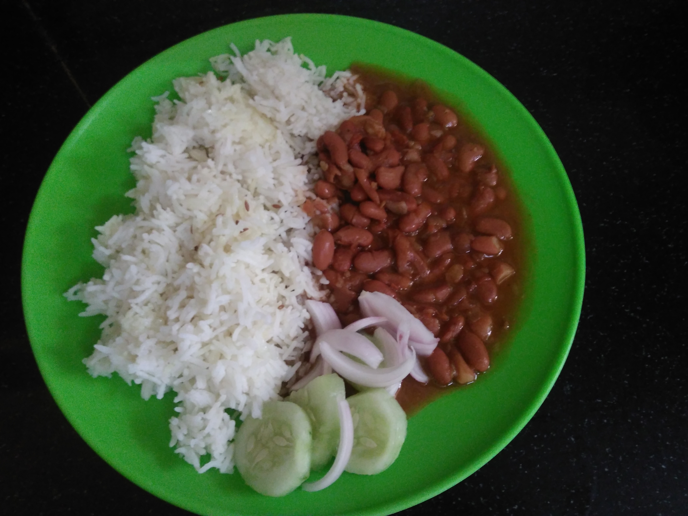

Rajma Chawal

Description
Rajma chawal is a popular North Indian dish that consists of red kidney beans (rajma)
cooked in a spicy tomato-based gravy, served with rice (chawal). The kidney beans are
typically soaked in water overnight, then cooked until they are tender and bursting with flavor.
The gravy is made by sautéing onions, garlic, and ginger, and then adding tomatoes, spices, and
water to create a thick and flavorful sauce. The cooked beans are then added to the gravy and
simmered for a few minutes. The dish is often garnished with fresh cilantro and served with
a dollop of butter on top. It is a delicious and comforting meal that is enjoyed by many
people in India and around the world.
Ingredients
- Red kidney beans (rajma)
- Rice (chawal)
- Onions
- Tomatoes
- Garlic
- Ginger
- Oil or ghee
- Salt
- Red chili powder
- Turmeric powder
- Cumin seeds
- Garam masala
- Coriander powder
- Water
- Fresh cilantro for garnishing
- Butter for serving
Steps
- Soak the rajma (kidney beans) in water overnight, or for at least 8-10 hours.
- Drain the water and rinse the rajma well.
- In a pressure cooker, add the rajma along with some water and salt.
- Close the pressure cooker and cook the rajma on medium heat until the pressure cooker releases its steam 3-4 times.
- Once the rajma is cooked, open the pressure cooker and set it aside.
- In a separate pan, heat some oil and add some cumin seeds.
- Once the cumin seeds start to sizzle, add some minced ginger and garlic.
- Sauté the ginger and garlic for a minute, then add some chopped onions and cook until they are soft and translucent.
- Add some chopped tomatoes and cook until they are soft and mushy.
- Add some salt, red chili powder, coriander powder, and turmeric powder. Mix well and cook for a minute.
- Add the cooked rajma to the pan and stir to mix everything well.
- Add some water to adjust the consistency of the rajma.
- Let the rajma simmer for about 10-15 minutes, until the flavors have blended well and the rajma has thickened.
- In the meantime, cook the rice according to your preference.
- Serve the rajma hot with the cooked rice. Garnish with some chopped cilantro and a dollop of butter or ghee, if desired.
- Soak the rajma (kidney beans) in water overnight, or for at least 8-10 hours.